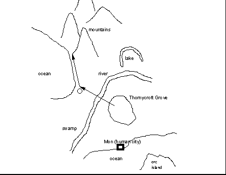

Ryndall, a ranger (Don); Mystea, a mage/rogue (Deb); Marsellus, a priest (Dave); and Ooskar, a diviner (Merwin), grew up with their mother Releya in an A-frame house in Thornycroft Grove. Ryndall and Missy spent much of their time outdoors -- Ryndall with the local rangers and Sacramento coven, Missy with the minstrels and rogues of nearby Bardhold. Marsellus and Ooskar were each more introverted and spent most of their time in their mother's company.
Ooskar was not much over 100 years old when Releya decided to send her children out into the wide world. She told them to visit and gain the wisdom of each of the five Marks of the lios elfar, then return to her. Ooskar, the "baby", was frail and sometimes needed protection from his overpowering curiosity. Missy and Marsellus were twins -- though she saw herself as bold and inquisitive while he believed himself cautious and contemplative, they were more alike than they knew. As eldest, Ryndall was the nominal leader of the young troup. He was inexperienced as a warrior, but with his immense strength he felt more than capable of defending his younger siblings. Their journey began on the first day of Spring.
The troup (Dorshal calls it a "hand") is attacked by pig-faced monsters (Dorshal calls them "orcs"). Marsellus is wounded, and Ryndall slays one. Later that afternoon, the troup meets with some humans from Sacramento coven, who warn the lios of one-eyed orc shamen, who especially hate Nolerak and his priests. The coven draw a map in the dirt of the lands the lios are heading toward. They point out the Sacramento/Wengen coven fountain, and give directions for crossing the mountains to reach the Swan Mark. The land on the east side of the river is mostly forest, with grasslands on the west side. The hand continues toward the river.

From his ranger teachers, Ryndall has heard tales of Forlithe, the "mad druid" who lives north of the river. Ooskar is curious and wants to meet her, and asks for a detour from the direct path to Quaal. The hand, after much discussion, reluctantly agrees. Early one morning, just before redlight, the hand is attacked by a giant orc (Dorshal calls it an "ogre"). Marsellus is wounded, and the monster is slain by Ryndall, Dorshal, and Missy. Ooskar takes a bag with some packets of herbs and some vials of ink.
[adventure list | previous | next ]